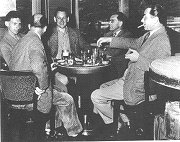
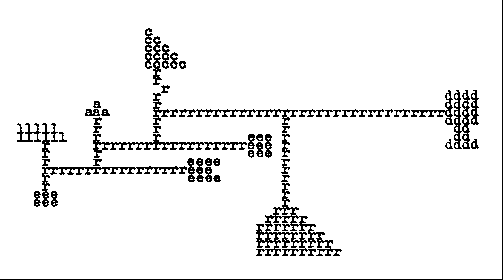
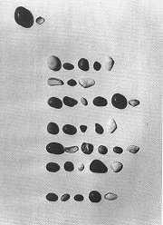
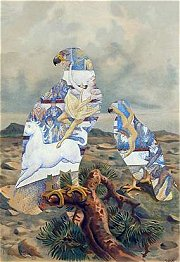
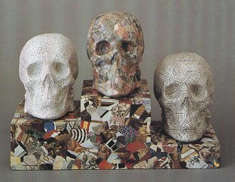
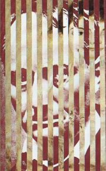
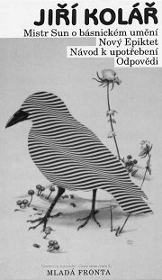

Lhoták: Básník Jiří Kolář
|
JIŘÍ KOLÁŘ
* 24. 9. 1914 (Protivín)
† 12. 8. 2002 (Praha)
Jiří Kolář byl vůdčí osobností Skupiny 42, která vznikla v době okupace. Po roce 1948 nemohl publikovat (kvůli básnické sbírce Prométheova játra strávil několik měsíců ve vězení). V 60. letech se věnoval experimentální poezii, ale později básnickou tvorbu nadobro opustil a plně se zaměřil na výtvarné umění. Od roku 1981 žil v Paříži, odkud finančně podporoval české umělce. Ve světě se proslavil především svými kolážemi. Kolářův lidský příběh i osud jeho díla je typickým příkladem konfliktu umělce s totalitní společností.
|

Jiří Kolář
|
Kolář a Skupina 42
Koláře uvedl do literatury František Halas, který podporoval začínající autory. S jeho pomocí vyšla roku 1941 Kolářova básnická prvotina Křestný list. Kolář se stal členem Skupiny 42, jejímž programem bylo zmapovat městskou periferii. Básníci z této skupiny používali nespisovné výrazy a psali volným veršem. Pod silným vlivem poetiky Skupiny 42 vznikaly Kolářovy básnické sbírky Sedm kantát, Limb a jiné básně, Ódy a variace a Dny v roce, které vyšly až po válce. Kniha Roky v dnech už vyjít nemohla a básník byl umlčen až do roku 1957, kdy mu vyšla sbírka Mistr Sun o básnickém umění.
|
Jiří Kolář: Dny v roce a Roky v dnech
Knihy Dny v roce a Roky v dnech spolu úzce souvisejí. První je sbírkou básní, druhá deníkových záznamů. Kolář si předsevzal, že během jednoho roku bude pravidelně psát jednu báseň a prózu denně. I když je celkový počet textů menší, podařilo se mu zmapovat období od 18. února 1946 do 15. února 1947. Jeho básně z tohoto období připomínají spíše záznamy nestranného pozorovatele. Aby byla zdůrazněna jejich dokumentárnost, jsou opatřeny přesným datem vzniku. Dny v roce ještě mohly vyjít, ale sazba Roků v dnech byla rozmetána a kniha v Čechách vyšla až roku 1992.
|
Zánik Skupiny 42
Nástup komunismu v roce 1948 znamenal faktický zánik mnoha uměleckých uskupení. Některá byla rozprášena, jiným byla znemožněna veřejná prezentace. Skupina 42 se rozpadla, protože Ivan Blatný emigroval, Jiří Kolář nesměl z politických důvodů publikovat a Josef Kainar začal psát budovatelské básně. Také výtvarníci Lhoták, Gross nebo Hudeček se vydali vlastními cestami.
Psal/a sis někdy deník? Jak dlouho ti to vydrželo?
K čemu je psaní deníku dobré?
Zkus si vést deník alespoň jeden měsíc.
Co nového ses dozvěděl/a o Kolářovi z jeho záznamů?
|
Kolář a 50. léta

Kolářův stůl v pražské kavárně Slavia byl pověstným centrem uměleckého dění. Setkával se u něj se svými přáteli a navštěvovali ho zde mladí adepti umění, kterým se Kolář ochotně věnoval, podobně jako František Halas jemu. Na fotografii jsou (zleva): Kamil Lhoták se synem, Josef Čermák, Josef Hiršal a Jiří Kolář.
|
Jiří Kolář: Prométheova játra
V básnické sbírce Prométheova játra pokračoval Kolář v metodě, kterou vymyslel už dříve – jako „očitý svědek“ soustavně zapisuje dobové události. Texty nemají názvy, ale jsou opatřeny datem vzniku. Kniha obsahuje básně psané volným veršem, prozaické texty a zajímavé experimenty, ve kterých Kolář kombinuje dvě různá díla. Báseň Skutečná událost byla inspirována dvěma texty – děsivou prózou Ladislava Klímy Skutečná událost zběhnuvší se v Postmortalii a povídkou Žofie Nałkowské U trati, na což autor upozorňuje i v doslovu.
Všichni přemýšlejí o lidstvu a nikdo nemyslí na člověka
všichni mluví o knihách a nikdo neumí říci poctivé slovo
všichni volají po sbratření národů a nikdo neumí podat ruku
všichni budují a nikdo nevidí postavené
všichni si přejí vzkřísit svět a nikdo nevidí živého
všichni bojují za práva svých otců a nikdo nevidí syny v otroctví
všichni horují pro mír a každý zapomněl co je to zemřít
přirozenou smrtí
všichni jsou odhodlaní krvácet za lepší lidstvo a nikdo neví co je sám
všichni mluví o lásce a žádný již neví co znamenají slova:
Dobrý den nebo Dobrou noc
všichni pracují na největším díle dějin a nikdo neví co dělá
všichni kráčejí vpřed k zářící metě budoucnosti a nikdo neví kudy jde
všichni jsou ochotni padnout za vlast za kulturu za slávu svých velikých mrtvých a nikdo neví co je obyčejný stud
Jásající hřbitov, 1. květen – 20. květen 1950. Sobota
|
|
Osud básnické sbírky Prométheova játra byl pro období totality velmi příznačný. Kolář ji napsal v roce 1950, ale o jejím uveřejnění nemohla být ani řeč, protože řada básní přímo nebo nepřímo napadala komunistický režim. Rukopis sbírky tedy koloval pouze mezi jeho známými. Při domovní prohlídce u kritika Václava Černého objevila Kolářovy texty státní bezpečnost a básník strávil roku 1953 devět měsíců ve vyšetřovací vazbě a nakonec byl na stejné období odsouzen. Šlo o jediný případ, kdy byl v Čechách odsouzen spisovatel za nevydané texty! Roku 1969 měla sbírka konečně vyjít, ale jejímu vytištění zabránila nastupující normalizace. Poprvé byla publikována roku 1985 v exilovém nakladatelství manželů Škvoreckých v Torontu. Doma vyšla až roku 1990.
Kolik let trvalo, něž mohla vyjít Prométheova játra?
Zaujala tě ukázka? Čím?
|
Kolář a 60. léta
Na přelomu 50. a 60. let začal Kolář spolupracovat s Josefem Hiršalem. Výsledkem bylo převyprávění a přebásnění Ezopových bajek, Schönbergových příběhů o městě Kocourkov, německých historek o Enšpíglovi a překlad Bürgerova Barona Prášila.
V této době vznikla i dvě Kolářova dramata – Mor v Athénách a Chléb náš vezdejší. Druhé mohlo vyjít pouze v německém překladu.
|
Jiří Kolář: Marsyas
V básnické sbírce Marsyas Kolář zajímavě pracuje s nespisovným jazykem a fonetickým přepisem slov. Vzal například známé příběhy z Bible (Šalomoun) nebo českých bájí (Přemysl a Libuše) a nechal moderního nevzdělaného vypravěče, aby je převyprávěl obecnou češtinou ve stylu „jak mu zobák narost“.
|
Na čem je založena komika Kolářových textů?
Myslíš si, že jde o básně? Proč?
Srovnej vyprávění O moudrém Šalamounovi s původním biblickým zpracováním.
Převyprávěj Kolářovy texty O Libuši a Přemyslovi spisovnou češtinou.
Kdo byl Epiktet? Jaký byl jeho náhled na svět?
Co si myslíš o uvedených radách?
Budeš se jimi řídit? Proč?
Vyber si jednu z 16 rad Vršovického Epikteta a použij ji jako motto pro slohovou práci.
Jak na tebe působí ukázky z Kolářovy sbírky Marsyas?
Kdo byl Marsyas?
|
Kolář experimentátor
Ve druhé polovině 60. let se Kolář seznámil s autory experimentální poezie – Josefem Hiršalem, Bohumilou Grögerovou, Ladislavem Novákem nebo Emilem Julišem. Začal tvořit básnické návody a vizuální experimentální texty, které shrnul do sbírek Vršovický Ezop, Nový Epiktet a Návod k upotřebení. Knihy Básně ticha a Očitý svědek už nemohly vyjít kvůli nástupu normalizace.
Kdo byl Calder?

Kolář: Autoportrét
|
Jiří Kolář: Básně ticha
Sbírka Básně ticha obsahuje především experimentální „básně“, které využívají vizuální stránku textu. Kolář v nich hledá nové možnosti psacího stroje – škrtá text, ťuká písmenka přes sebe a vytváří z nich nejrůznější obrazce. Z liter, které tvoří příjmení nějakého známého umělce, například sestavil obrázek připomínající jeho dílo nebo nějaký zajímavý geometrický obrazec.

Kolář: Calder
Některé „básně“ ve sbírce Básně ticha jsou složeny výhradně z číslic, z karet, ze zmuchlaného notového papíru, provázků atd. Kolář si také představoval, jakou báseň by napsal slepec, analfabet nebo cvok. Pro tyto texty vymyslel nové originální názvy jako analfabetogram nebo cvokogram. Závěrečné stránky knihy vyplňují reprodukce Kolářových koláží, asambláží a fotografie prostorových objektů polepených potištěným papírem. Básně ticha tak mapují postupný přechod od obyčejného textu až k výtvarnému artefaktu.
|
Kolář: Návod k upotřebení
Báseň ticha
Sesbírej
hromádku oblázků
a sestav z nich
kdekoliv
i s nadpisem
oblázek za oblázkem
jako slovo za slovem
řádku za řádkou
jako verš za veršem
pohlednou báseň

Jak vznikla tato báseň?
Proč se jmenuje Báseň ticha?
|
Kolář výtvarník

Kolář: Ornitologie moderního umění
Kolářovy koláže
Kolář poprvé vystavoval své koláže v Burianově Déčku roku 1937. V 60. letech se ke kolážím vrací a soustavně se jim věnuje až do konce života. V duchu experimentální tvorby vnáší nové postupy i do výtvarného umění. Vymýšlí proláže (proužky výtvarných reprodukcí sestavované k sobě v různých variacích) nebo muchláže (zmuchlané reprodukce).
|
Jiří Kolář výtvarník
Normalizace Kolářovi připomněla 50. léta, kdy nemohl publikovat. Jeho knihy zmizely z knihoven, čerstvě vytištěná monografie o Kolářovi z pera Miroslava Lamače se nedostala do knihkupectví. Kolář navíc podepsal Chartu 77. Režim se ho nakonec zbavil tím, že mu dovolil vycestovat na stipendijní pobyt do západního Berlína. Kolář se už nevrátil, od roku 1981 se natrvalo usadil v Paříži a získal i francouzské občanství. Jeho žena Běla, s níž se oženil v roce 1949 a která byla také výtvarnice, zůstala sama v Československu. Manžel byl v nepřítomnosti odsouzen k jednomu roku vězení a byl mu zabaven majetek. Kolář brzy dosáhl světového věhlasu, ale na Čechy nezapomněl – z Francie posílal peníze umělcům, kteří doma nemohli publikovat (například Skácelovi). Po roce 1989 se vrátil domů, kde začaly vycházet jeho dříve zakázané knihy a Kolářovu výtvarnou tvorbu představily rozsáhlé výstavy.

Kolář: Stupně vítězů
|

Kolář: Rozhovor pan B. s panem R. v nebi (Pocta Baudelairovi)
Vytvoř koláž, proláž, muchláž nebo nějaký výtvarný objekt po vzoru Jiřího Koláře.
Srovnej Kolářovy koláže s kolážemi dadaistů a surrealistů.
|
Internetové stránky
Kolář, informace
Kolář, ukázky
Kolář, ukázky
Kolář: Večer
Sárközi: Básně ticha Jiřího Koláře, studie
Praks: Jiřího Koláře poetika a estetika, studie
Rulf: Jiří Kolář, článek
Rulf: Prometheova játra, článek

Kolář: Uzlová báseň
|
Doporučená četba
Hiršal, J., Kolář, J.: Enšpígl, Praha 1962 (volné zpracování starých německých textů)
Hiršal, J., Kolář, J.: Kocourkov, Praha 1959 (volné zpracování textů J. F. von Schönberga)
Hiršal, J., Kolář, J.: O podivuhodném životě mudrce Ezopa, který rozuměl řeči ptáků, zvířat, hmyzu, rostlin i věcí, Praha 1960 (volné zpracování staročeských textů)
Chalupecký, Jindřich: Na hranicích umění, Prostor a Arkýř, Praha 1990
Jiří Kolář, Odeon, Praha 1993
Karfík, Vladimír: Jiří Kolář, Československý spisovatel, Praha 1994
Kolář, Jiří: Básně ticha, Český spisovatel, Praha 1994
Kolář, J.: Černá lyra, Návod k použití, Marsyas, Z pozůstalosti pana A., Vršovický Ezop, Česká suita, Odeon, Praha 1993
Kolář, J.: Křestný list, Ódy a variace, Limb a jiné básně, Sedm kantát, Dny v roce, Roky v dnech, Odeon, Praha 1992
Kolář, J.: Mistr Sun o básnickém umění, Nový Epiktet, Návod k upotřebení, Odpovědi, Český spisovatel, Mladá fronta a Odeon, Praha 1995
Kolář, J.: Ornitologie moderního umění, Protis, Praha 1997
Kolář, J.: Prométheova játra, Československý spisovatel, Praha 1990
Kolář, J.: Přestupný rok, Deník, Praha 1996
Kolář, J.: Týdeník 1968, Torst, Praha 1996
Kolář, J.: Ven ze stránky, Union studio, Plzeň 1994
Kolářová, Běla: Objekty a asambláže, Torst, Praha 1993
|
Vypracuj písemný referát o některé z uvedených knih.

Kolář: Ornitologie moderního umění
|
|